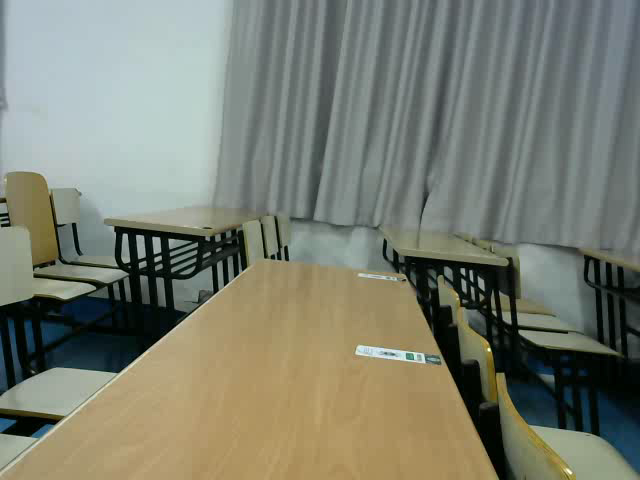
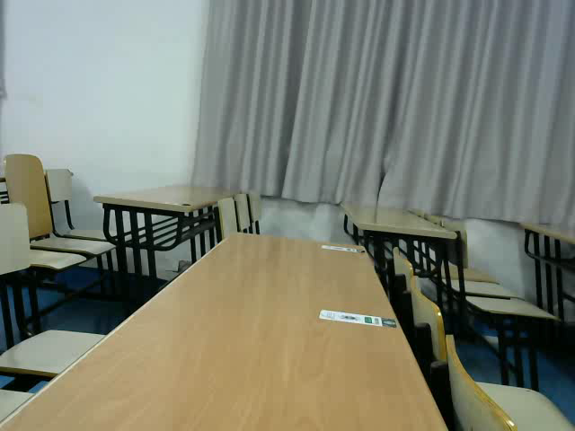
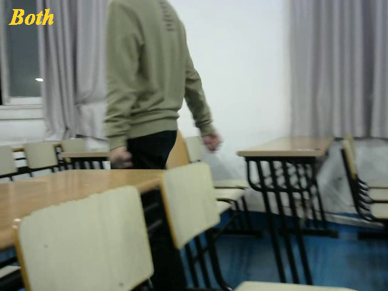
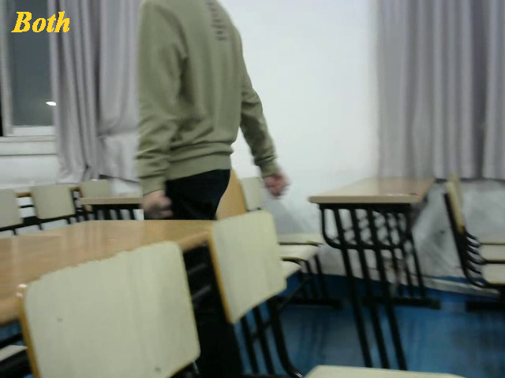

[1] Ravi Garg, Avinash L. Varna, Adi Hajj-Ahmad, and MinWu.
“Seeing” ENF: Power-Signature-Based Timestamp for Digital
Multimedia via Optical Sensing and Signal Processing.
IEEE Transactions on Information Forensics and Security,
8(9):1417–1432, 2013.
[2] Saffet Vatansever, Ahmet Emir Dirik, and Nasir Memon.
Analysis of rolling shutter effect on ENF-based video forensics.
IEEE Transactions on Information Forensics and Security,
14(9):2262–2275, 2019.
[3] Guang Hua, Han Liao, Haijian Zhang, Dengpan Ye, and Jiayi
Ma. Robust ENF Estimation Based on Harmonic Enhancement
and Maximum Weight Clique. IEEE Transactions on
Information Forensics and Security, 16:3874–3887, 2021.
[4] Guang Hua, Han Liao, Qingyi Wang, Haijian Zhang, and
Dengpan Ye. Detection of Electric Network Frequency
in Audio Recordings–From Theory to Practical Detectors.
IEEE Transactions on Information Forensics and Security,
16:236–248, 2020.
[5] Guillermo Gallego, Tobi Delbrück, Garrick Orchard, Chiara
Bartolozzi, Brian Taba, Andrea Censi, Stefan Leutenegger,
Andrew J Davison, Jörg Conradt, Kostas Daniilidis, et al.
Event-based vision: A survey. IEEE transactions on pattern
analysis and machine intelligence, 44(1):154–180, 2020.
[6] Wei Liao, Xiang Zhang, Lei Yu, Shijie Lin, Wen Yang,
and Ning Qiao. Synthetic Aperture Imaging With Events
and Frames. In Proceedings of the IEEE/CVF Conference
on Computer Vision and Pattern Recognition, pages 17735–
17744, 2022.

 


 
